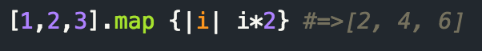
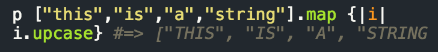

Ruby Enumerable Methods
.maps
July 13, 2015
This week we stepped it up a notch and kicked into larger Ruby challenges. In order to accomplish these tasks, we had to break down larger problems into smaller, more manageable steps, logically solve each challenge with pseudocode, then reference RubyDocs to translate our pseudocode into a method that would actually run.
.maps
For the purposes of this blog I'm going to focus on the .maps method. In ruby .maps is a functional method that outputs each item of an array after running the block for each element.
For example:

Here, each element of the array is being multiplied by two and being remapped onto a new array

Again here each string passes through the iteration and does what the method calls upon, here being to have each letter be uppercase.
Simply put, the maps method takes each item of the input and passes it through the code block and puts out the resultanting elements. The .maps method is very useful for iterating through loops and altering each item of the input.